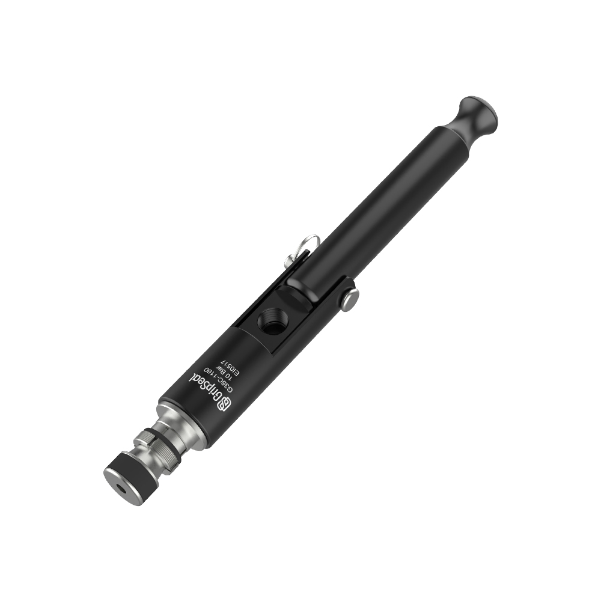

Series Shelf
Straight Tube Series Reserved Here
This page reserves the domestic-style category shelf for straight tube sealing. Series detail pages can be added as product data is confirmed.

G30
Reserved entry for straight tube ID or OD sealing and quick production testing.
Straight TubeID / ODLeak Test
Reserve Series Detail
G35
Reserved route for tube-end sealing where clamping geometry or handling space needs review.
Tube EndClamp SealFixture
Reserve Series Detail
G35C
Reserved slot for compact straight tube sealing and future detailed model tables.
CompactRound TubeSelection Table
Reserve Series Detail